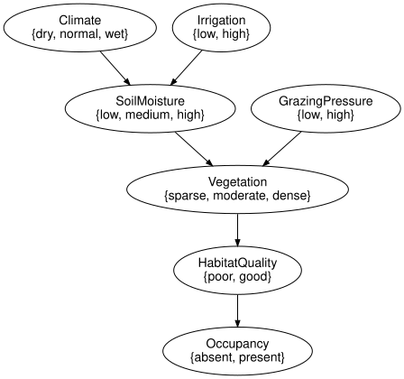
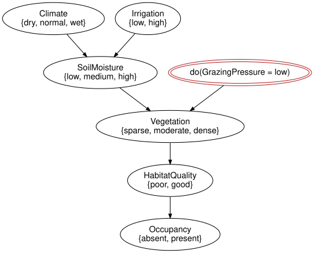

The reference habitat network
Simon Frost
- Overview
- Setup
- Validation
- Joint distribution versus exact inference
- Evidence
- Observing versus intervening
- The same model from Netica and GeNIe files
- Summary
- References
Overview
SPEC section 45 fixes a small ecological Bayesian network as the integration test of the whole ecosystem:
Climate -> SoilMoisture -> Vegetation -> HabitatQuality -> Occupancy
Irrigation -> SoilMoisture
GrazingPressure -> VegetationThis vignette runs it end to end: the model from the zoo, its picture, validation, the brute-force joint distribution against exact inference, evidence, the difference between observing and intervening on grazing pressure, and the same answers from the Netica and GeNIe files that ship with BayesianNetworkFormats.jl.
The network is deliberately in the shape the ecological guidelines ask for (Marcot et al. 2006; Chen and Pollino 2012): a small number of discretised variables, each arc a stated mechanism, and a management lever separated from the quantity it acts on – which is also where the discretisation and elicitation costs discussed by Uusitalo (2007) and Kuhnert et al. (2010) would fall in a real study.
Setup
using EcologicalBayesianNetworks
using BayesianNetworks
using BayesianNetworkInference
using Random
m = load_model("reference_habitat_bn")BayesModel(7 variables, 7 mechanisms, 7 kernels)load_model returns BayesianNetworks.reference_habitat_model(), the structure of reference_habitat_bn() with the conditional probability tables of the habitat_reference fixtures bound. Chance variables are ellipses; every arc is a mechanism input.
to_graphviz(m)
model_summary("reference_habitat_bn")ModelSummary reference_habitat_bn (Reference habitat network (SPEC section 45))
format / licence julia / MIT (builtin)
nodes 7 (7 chance, 0 decision, 0 utility)
arcs 6
largest state space 3
largest in-degree 2
load_model BayesModelValidation
validate checks the syntax (one mechanism per variable, acyclic, contiguous positions) and, with semantics = true, that every mechanism resolves to a kernel whose domain and codomain match its parents and target and that every row sums to one. It returns nothing when everything is in order.
validate(m; closed = true, unique_names = true, semantics = true)Joint distribution versus exact inference
With seven variables the joint distribution has only 432 entries, so the reference semantics of SPEC section 14, the product of all the kernels, can be enumerated outright. joint_distribution returns it as a state I -> (x) variables.
J = joint_distribution(m)
size(J.table), sum(J.table)((3, 2, 3, 2, 3, 2, 2), 1.0000000000000002)marginal sums the joint; BayesianNetworkInference.infer answers the same query by variable elimination without ever forming the joint. The two agree to rounding.
p_occ = marginal(m, :Occupancy)FiniteKernel{Float64}(I → Occupancy{absent,present})
()
absent 0.5238
present 0.4762post, diag = infer(m, :Occupancy)
post.table ≈ p_occ.table, diag(true, InferenceDiagnostics([:Climate, :Irrigation, :SoilMoisture, :GrazingPressure, :Vegetation, :HabitatQuality], 18, 6, 2, false))The junction-tree backend gives every marginal from one calibration:
ms = all_marginals(m; backend = JunctionTree())
round.(ms[:Vegetation].table; digits = 4)3-element Vector{Float64}:
0.3611
0.3798
0.259Ancestral sampling (SPEC section 18) draws from the same distribution; the empirical frequency of occupancy converges to the exact value.
s = ancestral_sample(m, 20_000; rng = Xoshiro(2026))
round.(empirical_marginal(s, :Occupancy).table; digits = 3)2-element Vector{Float64}:
0.519
0.481Evidence
Evidence conditions the joint. posterior reads the numbers off as a dictionary; observe records the evidence on the model so that every later query uses it.
posterior(m, :Occupancy; evidence = Dict(:Vegetation => :dense))Dict{Symbol, Float64} with 2 entries:
:present => 0.6675
:absent => 0.3325me = observe(m, :Vegetation => :dense)
marginal(me, :Occupancy).table ≈ infer(me, :Occupancy)[1].tabletrueObserving versus intervening
SPEC section 45 asks for P(Occupancy = present | do(GrazingPressure = low)). A hard intervention rewrites the mechanism of GrazingPressure into the point mass at low (SPEC sections 21 and 22); observation conditions on the event instead. The two operations are recorded differently: the intervention appears in the syntax and the history, the observation in the evidence.
low_do = do_intervention(m, :GrazingPressure => :low)
low_obs = observe(m, :GrazingPressure => :low)
(intervene = marginal(low_do, :Occupancy).table[2], observe = marginal(low_obs, :Occupancy).table[2])(intervene = 0.51166025, observe = 0.51166025)# The raw events carry a wall-clock timestamp, which would make this committed
# output differ on every render; show what the intervention did instead.
[(e.kind, e.target, e.added.kernel_ref) for e in history(low_do)]1-element Vector{Tuple{Symbol, Symbol, PointMassRef}}:
(:hard, :GrazingPressure, PointMassRef(:low))to_graphviz(low_do)
Because GrazingPressure is a root, the two numbers coincide: nothing upstream can be learned from it. On a variable with parents the difference shows. Observing dense vegetation is evidence that the soil was moist; forcing dense vegetation tells us nothing about the soil, because the arc from SoilMoisture has been cut.
(intervene = round.(marginal(do_intervention(m, :Vegetation => :dense), :SoilMoisture).table; digits = 4),
observe = round.(marginal(observe(m, :Vegetation => :dense), :SoilMoisture).table; digits = 4),
prior = round.(marginal(m, :SoilMoisture).table; digits = 4))(intervene = [0.288, 0.403, 0.309], observe = [0.0834, 0.35, 0.5666], prior = [0.288, 0.403, 0.309])Downstream of the rewritten variable the two agree, since Occupancy depends on the rest of the network only through Vegetation:
marginal(do_intervention(m, :Vegetation => :dense), :Occupancy).table ≈
marginal(observe(m, :Vegetation => :dense), :Occupancy).tabletrueThe same model from Netica and GeNIe files
The habitat_reference fixtures of BayesianNetworkFormats.jl hold the same network in Netica .dne and GeNIe .xdsl form. read_bayesnet parses either into a BayesModel, and the intervention query gives identical answers from all three sources.
dne = read_bayesnet(fixture_path("dne/habitat_reference.dne"))
xdsl = read_bayesnet(fixture_path("xdsl/habitat_reference.xdsl"))
dne ≈ m, xdsl ≈ m(true, true)query(model) = marginal(do_intervention(model, :GrazingPressure => :low), :Occupancy).table[2]
query(m), query(dne), query(xdsl)(0.51166025, 0.51166025, 0.51166025)The zoo’s model_ir gives the NetworkIR of the Julia-built model, which write_network can turn back into any of the file formats.
ir = model_ir("reference_habitat_bn")
[(v.id, v.parents) for v in ir.variables]7-element Vector{Tuple{Symbol, Vector{Symbol}}}:
(:Climate, [])
(:Irrigation, [])
(:SoilMoisture, [:Climate, :Irrigation])
(:GrazingPressure, [])
(:Vegetation, [:SoilMoisture, :GrazingPressure])
(:HabitatQuality, [:Vegetation])
(:Occupancy, [:HabitatQuality])Summary
The SPEC section 45 reference network is small enough that exact inference can be checked against the brute-force joint distribution entry by entry, which is what makes it the integration test of the whole ecosystem. Observing vegetation can update the upstream soil moisture, whereas intervening on vegetation leaves soil moisture at its prior. GrazingPressure is a root in this example, so observing it updates nothing upstream. Downstream agreement requires the relevant screening-off conditions; it is not a general consequence of being downstream. The API keeps observation and intervention distinct. The same model read from the Netica and GeNIe files gives the same numbers. The next vignette, The management influence diagram, adds a decision and two utilities to this network.
References
Chen, Serena H., and Carmel A. Pollino. 2012. “Good Practice in Bayesian Network Modelling.” Environmental Modelling & Software 37: 134–45. https://doi.org/10.1016/j.envsoft.2012.03.016.
Kuhnert, Petra M., Tara G. Martin, and Shane P. Griffiths. 2010. “A Guide to Eliciting and Using Expert Knowledge in Bayesian Ecological Models.” Ecology Letters 13 (7): 900–914. https://doi.org/10.1111/j.1461-0248.2010.01477.x.
Marcot, Bruce G., J. Douglas Steventon, Glenn D. Sutherland, and Robert K. McCann. 2006. “Guidelines for Developing and Updating Bayesian Belief Networks Applied to Ecological Modeling and Conservation.” Canadian Journal of Forest Research 36 (12): 3063–74. https://doi.org/10.1139/x06-135.
Uusitalo, Laura. 2007. “Advantages and Challenges of Bayesian Networks in Environmental Modelling.” Ecological Modelling 203 (3–4): 312–18. https://doi.org/10.1016/j.ecolmodel.2006.11.018.